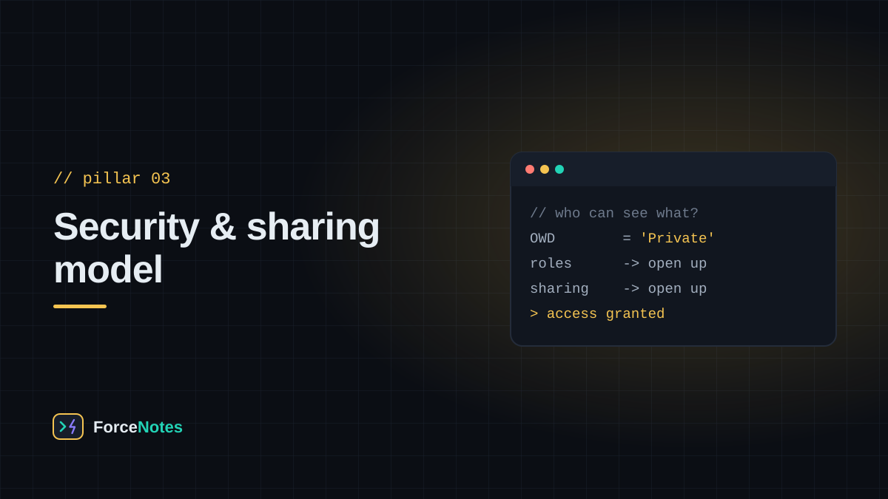
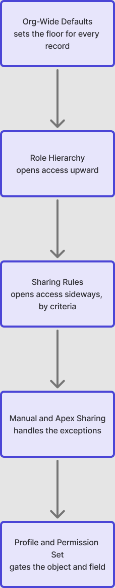

Salesforce answers "who can see this record?" through a stack of layers that apply in a fixed order — start restrictive, then open up deliberately. Read it top to bottom and it stops being confusing.

Every access question runs through the same funnel. Each layer can only grant access on top of the last — nothing below Org-Wide Defaults can take access away.

This is the pairing that trips up almost everyone at first, because both control access to objects, fields, and system permissions — but they play different roles.
Modern Salesforce orgs increasingly favor minimal profiles plus permission sets (or permission set groups) for almost everything, precisely because profiles are hard to compare and permission sets are easy to reason about individually.
Object-level access (can a user see the Opportunity tab at all?) is separate from field-level access (can they see the Amount field on it?). Both profiles and permission sets can set a field to Visible, Read-Only, or Hidden — a field can be technically on the record and still invisible to a given user.